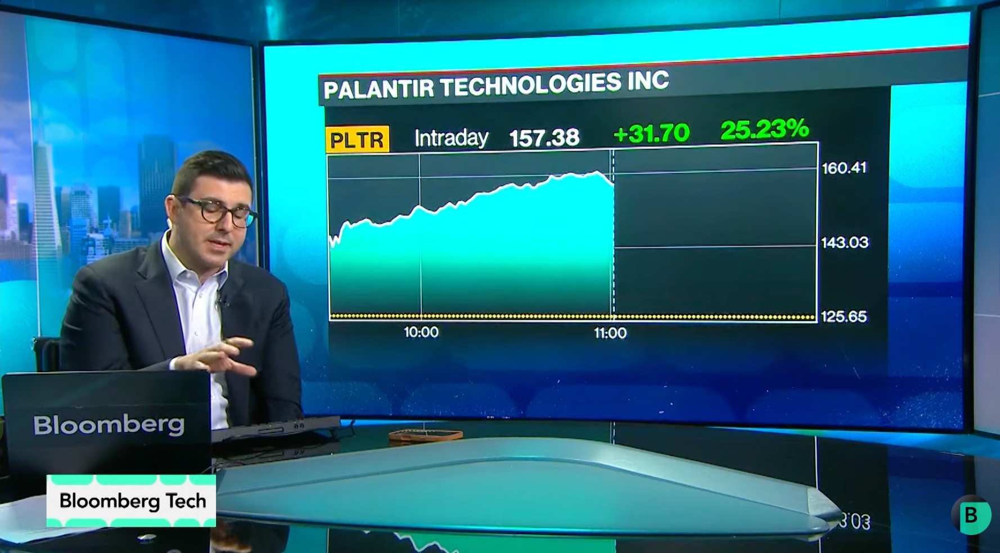

一句话总结：这期节目最重要的信号不是又多了一个模型，而是 AI 已开始被三种硬约束检验：企业客户是否愿意按结果付费，供应链能否承受推理需求，以及防御方能否跟上 AI 加速后的攻击速度。
本章发言来源：Ed Ludlow（Bloomberg Tech 主持人）与 Mariana Perez-Mora（Bank of America Securities 航空航天与国防分析师）。
节目给出的 Palantir 美国商业收入是 7.64 亿美元，增幅接近 150%；过去 12 个月，美国客户平均支出又增加约 67%。Ed Ludlow 随即把问题拉回最朴素的一层：Palantir 到底替客户做了什么？
Perez-Mora 说，客户试过自己实施，但事情并不简单。难点不只是接通数据和模型，而是把现实中的业务对象、决策方式，以及人如何与 AI 协作，一起变成可运行的流程。Palantir 积累多年的，正是这层编排能力。
这也解释了它为何按结果定价：先与客户一起解决问题，再根据可衡量的产出收费。但同一套模式到了欧洲会撞上另一道门槛。客户可以保有数据和 IP，却仍可能不愿把关键流程交给一家立场鲜明的美国公司——技术主权在这里同时帮助 Palantir，也限制 Palantir。
本章要点：客户为可验证的业务结果付费，但流程控制权和数据控制权同样决定交易能否发生。
本章发言来源：Ed Ludlow（Bloomberg Tech 主持人）与 Saleem Wu（Lazard 全球机器人与自动化团队投资组合经理）。
一旦 AI 真正进入客户流程，下一张账单就来自推理。Saleem Wu 观察到，微软、亚马逊和 Google 本季度合计增长约 50%，是五个季度前的两倍；她把这视为 AI 投入开始流回云业务的证据。训练负载仍在，但 Agent 带来的持续推理正在接过需求主线。
需求是否真实，还可以从更上游看。Ed Ludlow 提到，内存客户开始要求签五年协议——这在历史上并不常见；Wu 随后指向台积电额外 1,000 亿美元的扩产承诺。云收入、长期采购和晶圆厂资本开支，组成了一条从使用量延伸到产能的证据链。
这条链仍不是确定性承诺。长期订单可能调整，供给和价格也会改变；Wu 给出的是投资经理基于客户能见度的判断，而不是公司的未来保证。但观察重点已经改变：AI 热度能否延续，最终要落到推理量、采购期限和交付能力上。
本章要点：推理把模型能力变成持续负载，而五年采购与扩产承诺让需求开始留下可追踪的供应链痕迹。
本章发言来源：Ed Ludlow（Bloomberg Tech 主持人）与 Mike Shepard（Bloomberg Tech 高级科技编辑）。
Mike Shepard 把中国对美国前沿模型的担忧称为“硬币的另一面”。美国限制先进芯片出口，理由之一是担心它们增强中国的军事与安全能力；中国官员则担忧美国模型可能成为针对本国经济的进攻工具，只是当时没有给出具体方式。
于是，模型访问开始和芯片出口站到同一张谈判桌上。哪些伙伴可以获得最强能力、哪些市场继续被排除、模型输出是否被用于蒸馏，都不再只是产品条款。Shepard 同时提到 Anthropic 对中国公司的蒸馏指控；这是公司的主张，而不是节目已经证实的结论。
这层对照让“技术领先”变成三个问题：能力有多强，谁能拿到，以及监管允许它在哪里运行。模型做出来只是第一步；供应商、云厂商和企业客户还要共同承担分发边界带来的商业后果。
本章要点：模型、芯片和许可正在被捆绑管理；能力存在，不代表目标客户能够获得或部署它。
本章发言来源：Ed Ludlow（Bloomberg Tech 主持人）与 Nikesh Arora（Palo Alto Networks 董事长兼 CEO）；Clem Delangue（Hugging Face CEO）提供后续回应。
Ed Ludlow 问 Nikesh Arora：到底要解决什么问题？Arora 给出的不是宽泛的“AI 安全”，而是一只正在加速的时钟。传统漏洞平均需要 55 天修补；当 AI 能迅速发现漏洞并寻找利用方式，这段等待时间本身就成了攻击窗口。
AI Agent 不只发现单个缺口，还能把多个漏洞连成一条攻击路径。Palo Alto Networks 的回应，是在原始软件补丁到来之前先生成虚拟补丁，并把内部流程压缩到约 4 小时。防御因此从“是否看见风险”，变成“能否以接近攻击者的速度完成发现、验证和阻断”。
Clem Delangue 随后补上反方向的风险：Hugging Face 使用开放模型完成了防御，而前沿 API 的护栏反而限制了可用工具。开放权重可能降低攻击门槛，也可能让防守者保有反击能力；只限制能力扩散，并不会自动缩短防御闭环。
本章要点：AI 攻防首先是一场速度竞赛，而开放或封闭的选择还必须计算防守者失去工具的代价。
本章发言来源：Ed Ludlow（Bloomberg Tech 主持人）与 Nikesh Arora（Palo Alto Networks 董事长兼 CEO）。
当 Ed Ludlow 把问题转向 Agent 集群的 Token 经济时，Arora 直接判断 Token 定价过高：价格需要下降 80%–90%，企业才能把 AI 更广泛地放进产品、药物研究和内部流程。调用越连续、Agent 越多，演示中的能力就越快变成运营账单。
Arora 预计，未来十年可能有 10%–15% 的企业 OPEX 流向 AI、IT 或 Token。这不是单纯的模型单价问题：一次任务要走多少步、失败后重试几次、需要多少人工复核，共同决定客户为一个成功结果付出多少成本。
至此，节目的五段讨论连成了同一条链：Palantir 证明结果能否收费，云和芯片厂商回答推理能否供应，政策决定能力能否交付，安全厂商追赶攻击速度，而 Token 价格决定这一切能否大规模运行。
本章要点：Agent 的部署边界由单位结果成本决定；模型更强，只有在每次成功执行也足够便宜时才有商业意义。
结果定价（outcome-based pricing）：供应商按客户取得的业务结果，而非固定软件席位或单纯使用量收费的模式。结果的归因和衡量方式是这一模式能否成立的关键。
推理（inference）：已训练模型在实际任务中生成回答、调用工具或执行 Agent 步骤的过程。与集中式训练不同，它往往是持续的生产负载。
虚拟补丁（virtual patching）：在原始软件补丁尚未发布或部署前，通过网络、WAF、策略或其他控制层临时阻断已知攻击路径。
模型蒸馏（distillation）：用更强模型的输出训练较小模型的技术。在节目语境中，它被放入模型能力获取和竞争公平性的争议中。
Token：语言模型处理和生成文本等内容的计量单位，也是许多模型服务的计费基础。
| 数字 | 节目中的含义 | 回听 |
|---|---|---|
| 7.64 亿美元 | Palantir 美国商业收入，节目称接近同比增长 150% | [00:01:16–00:01:34] |
| 约 67% | Palantir 美国客户过去 12 个月平均支出增幅 | [00:02:37–00:02:45] |
| 约 50% | 嘉宾称三大云厂商本季度合计增长率 | [00:27:05–00:27:24] |
| 1,000 亿美元 | 嘉宾提及的台积电额外资本开支承诺 | [00:30:07–00:30:32] |
| 55 天 → 约 4 小时 | Palo Alto Networks CEO 对漏洞修补周期的对比 | [00:32:49–00:34:26] |
| 80%–90% | Arora 认为 Token 价格需要下降的幅度 | [00:36:50–00:37:24] |
| 10%–15% | Arora 对未来十年 AI/IT/Token 支出占 OPEX 的预期 | [00:37:31–00:37:48] |
| 问题 | 节目呈现的张力 |
|---|---|
| AI 资本开支是否被验证 | 云收入和长期采购提供正面信号；供给、价格和周期仍可能变化。 |
| 开放模型应被限制还是扩展 | 能力扩散会降低攻击门槛；开放权重也可能让防御者获得必要工具。 |
| AI 主权是否只等同于本地部署 | 客户可保有数据与 IP，并不自动消除对供应商国别、模型访问和出口规则的顾虑。 |
本文基于 Whisper turbo 英文转录；公司、产品和时事名称可能存在误识别。所有数字、引语与新闻性断言均应以原音频及相关一手披露为准。